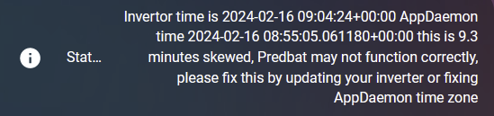

FAQ
I've installed Predbat but I don't see the correct entities
- First look at predbat.status in Home Assistant and the Predbat/AppDaemon app log (which can be found in the list of log files in the System/Log area of the GUI). See if any errors are warnings are found. If you see an error something is likely configured incorrectly, check your entity settings are correct.
- Make sure Solcast is installed and it's auto-updated at least a couple of times a day (see the Solcast instructions).
The default Solcast sensor names may be wrong, you might need to update the
apps.yamlconfig to match your own names (some people don't have the solcast_ bit in their names)
Predbat is failing with Warn: Service call select/select_option data failed
Here's an example error message:
2026-01-14 15:10:43.706153: Warn: Service call select/select_option data
{'option': '17:00:00', 'entity_id':
'select.predbat_fox_603j303046yp036_battery_schedule_charge_end_time'}
failed
This will happen if you have no actual selectors provided by integrations in Home Assistant before Predbat starts. You can workaround this by adding a
dummy selector to configuration.yaml and restarting HA e.g:
template:
- select:
- name: "simple_select"
state: "{{ states('input_select.my_input') }}" # Current value
options: "{{ ['Option 1', 'Option 2', 'Option 3'] }}" # Available options
select_option:
- service: input_select.select_option
target:
entity_id: input_select.my_input
data:
option: "{{ option }}"
Why is my house load lower than expected, or zero?
If your house load is unusually low in the Predbat plan, then its often due to Predbat excluding some of your house load.
- Are your load_today, import_today, export_today and pv_today entries in
apps.yamlcorrectly configured and pointing to the right inverter/Home Assistant entities? - Check the history of these entities, are there gaps in them or do the entities go down during the day rather than continually increment - these need to be resolved if they do not increment continually over the day and reset at midnight.
- Have you accidentally used a power sensor (W or kW) rather than a daily energy sensor (Wh or kWh)?
- In the logfile do you see car/iBoost energy being excluded, e.g. "Today's predicted so far 19.0kWh with 3.2kWh car/iBoost excluded"?
- If energy is being excluded and you have an EV/iBoost, have you configured the correct car_charging_energy energy sensor(s) to filter car charging energy in
apps.yaml? - Do these sensors increment over the day or are there gaps or resets back to zero during the day? Use a daily utility meter to wrap around your EV charger sensor to provide Predbat with a sensor that doesn't do this.
- Depending on the wiring of your EV charger and inverter, the inverter may not 'see' the EV charging energy.
If you configure car_charging_energy in
apps.yamlthen Predbat will be calculating an artificially low house load - turn switch.car_charging_hold off to stop this. - If you don't have a sensor that provides car charging energy then Predbat will use input_number.predbat_car_charging_threshold as the threshold to detect car charging - adjust as necessary for your EV charger.
- If you don't have an EV charger then turn switch.car_charging_hold off as Predbat will still use input_number.predbat_car_charging_threshold and assume any house load above this is EV charging.
Why is my predicted charge % higher or lower than I might expect?
- Predbat is based on cost, so it will try to save you money. If you have the PV 10% option enabled it will also take into account the worst-case scenario and how often it might happen, so if the forecast is a bit unreliable it's better to charge more and not risk getting stung importing.
- Have you checked your energy rates for import and export are correct, maybe check the rates graph and confirm. If you do something like have export>import then Predbat will try to export as much as possible.
- Have you tuned Solcast to match your output accurately?
- Have you tuned predbat_best_soc_keep settings?
- Do you have predicted car charging during the time period?
- You can also tune predbat_load_scaling and predbat_pv_scaling to adjust predictions up and down a bit
Why didn't the slot get configured?
- Are you in read-only mode?
My plan doesn't include any charging?
- Do you have the predbat_mode set to Control charge (or Control charge & discharge)?
The charge limit keeps increasing/decreasing in the charge window or is unstable
- Check you don't have any other automations running that adjust GivTCP settings during this time. Some people had a script that changes the reserve %, this will cause problems - please disable other automations and retry.
I changed a config item but it made no difference?
- You might have to wait a few minutes until the next update cycle. Depending on the speed of the computer that Predbat is running on, it can take 1-5 minutes for Predbat to run through. You can see the date/time that Predbat last completed a run at the start of the Predbat HTML plan.
It's all running but I'm not getting very good results
- You might want to tune input_number.predbat_best_soc_keep to set a minimum target battery level, e.g. I use 2.0 (for 2kWh, which is just over 20% on a 9.5kWh battery). If you set input_number.predbat_best_soc_keep too high then Predbat could need to charge the battery at unfavourable import rates, so try to set it to a fairly low value, especially if you have a small battery. If you set it to zero then Predbat may not charge at all, so use 0.1 as a minimum.
- Have a read of the energy rates configuration guide as depending on your tariff different settings may be required
- Check your solar production is well calibrated (you can compare Solcast vs actually in the Home Assistant energy tab or on the GivEnergy portal)
- Make sure your inverter max AC rate has been set correctly
- If you have an EV that you charge then you will want some sort of car charging sensor or use the basic car charging hold feature or your load predictions may be unreliable - see Car charging
- Do you have a solar diverter? If so maybe you want to try using the iBoost model settings.
- Perhaps set up the calibration chart and let it run for 24 hours to see how things line up
- If your export slots are too small compared to expected check your inverter_limit is set correctly (see below)
In my power flow diagram my grid power is the wrong way around
You may need to set 'grid_power_invert to True if your grid_power is positive when importing.
My plan is freeze charging or holding at 100% battery a lot
Round trip losses
Round trip losses for charging the battery and then using it for your home are:
charge loss x inverter loss x inverter loss x discharge loss
The default is therefore: $0.97 * 0.96 * 0.96 * 0.97 \approx 0.87$ (13%)
If you freeze charge or hold at 100% then you will be using the grid which is 13% cheaper than using the battery at the same import rate. If you start increasing these losses to say 5% and 6% then you are getting to around 20% round trip losses. This means charging the battery at 20p is the same cost as using the grid at 25p.
However, if you start setting metric_self_sufficiency then you are telling Predbat to try to import less when possible. If your round trip losses are 20% then using the grid directly will import 20% less energy than charging your battery. Therefore a 5p metric self-sufficiency will effectively add another 1p to this difference i.e. using the grid at 26p is now the same as charging the battery at 20p!
If you set metric_battery_cycle to say 2p then that would add another 4p to using the battery so now charging at 20p would equate to using the grid at 30p!
Bottom line, be careful how you configure things.
When my battery is charging to 100% it fluctuates between 98% and 100%, and/or gives an error setting reserve
Some inverters e.g. GE AIO inverter won't allow the reserve to be set to 100, in which case set in apps.yaml
inverter_reserve_max : 98
And this should prevent the issue
The plan doesn't charge or discharge when I expect it to
Predbat can only work on the information it's given, although it does run every 5 minutes to execute the plan, and updates and re-evaluates the plan every 10 minutes, adjusting if necessary.
The plan Predbat produces assumes that your average load and PV forecasts are accurate and Predbat will aim to give you the maximum return.
Make sure you have set up your Solcast solar forecast correctly with the number of panels, orientation, output, etc.
Projected daily load is determined from historical load information so make sure you have set days_previous and days_previous_weight in apps.yaml to give appropriately representative load history to Predbat, and read the longer explanation of how days_previous works.
You could adjust input_number.predbat_load_scaling to 1.2 so the plan will incorporate 20% more expected load if you want to be more pessimistic about historical load, and input_number.predbat_pv_scaling to similarly adjust the PV forecast - these and other adjustment options are described in the Scaling and Weight options.
It is very important to correctly set Predbat's Battery Loss Options and Battery Margins as these can have a huge and critical impact on the plan that Predbat generates.
Predbat's default configuration values are the recommended starting values for most users but there is no single right set of configuration values for every user of Predbat, it depends on many factors and your personal preferences. Many users will need to customise and tweak their Predbat configuration to suit their needs.
The SoC level that Predbat aims to keep in the battery input_number.predbat_best_soc_keep and the absolute minimum SoC level input_number.predbat_best_soc_min are the first things to check. If these are set too high then Predbat will charge at unfavourable rates to maintain the battery SoC. Conversely, if you find Predbat is letting the battery exhaust too early, set predbat_best_soc_keep to 1.0 so Predbat will aim to keep 1kWh available for unexpected load.
Predbat performs a lowest-cost battery optimisation so a key part of deciding whether to charge, discharge or feed the house from the battery are the loss rates input_number.predbat_battery_loss, input_number.predbat_battery_loss_discharge and input_number.predbat_inverter_loss. Typical values could be 4, 4, 4 or 5, 5, 5. It is tempting to set these inverter loss figures lower to encourage Predbat to use the battery more, but this should be resisted as experience from the GivEnergy community forum suggests total energy conversion losses are in the range of 10-20%.
Putting these losses into context and assuming you have an AC-coupled battery and have set the losses to 4, 4 and 4; then for every kWh charged from the grid, you will only get 0.92kWh stored in the battery (4% charge + 4% inverter conversion loss) and similarly when that 0.92kWh is discharged to the home you will only receive 0.85kWh (0.92 x 0.92).
These loss percentages also impact the Predbat plan. Consider an import rate of 20p/kWh; after conversion losses are considered, each 1kWh of stored battery charge will in effect have cost 21.7p (20 / 0.92) to import.
Then for discharging, the same applies. Each kWh of stored battery charge (that costs 21.7p to charge) will in effect have cost 23.6p (21.7 / 0.92) to discharge. Predbat makes cost optimisation decisions so unless the current import rate is more than 23.6p, it will be cheaper to let the home run off grid import rather than to discharge the battery.
If you turn debug mode on for the Predbat plan then you can see the effective import and export rates after losses that Predbat calculates in the Predbat plan.
Predbat also uses input_number.predbat_metric_battery_cycle (expert mode setting) to apply a 'virtual cost' in pence per kWh for charging and discharging the battery. The default value is 1p but this this can be changed to a different value to recognise the 'cost of using the battery', or set to zero to disable this feature.
So if the metric battery cycle is set to 1p, and continuing the example above, each kWh of battery charge will be costed at 22.7p (21.7p + 1p battery metric to charge), and the battery will not be discharged to support the home unless the current import rate is more than 25.6p (23.6p + 1p cost of charging + 1p cost to discharge).
input_number.predbat_metric_min_improvement and input_number.predbat_metric_min_improvement_discharge (both expert mode settings) also affect Predbat's cost optimisation decisions as to whether it is cost beneficial to charge or discharge the battery so could be tweaked if you feel Predbat is charging or discharging with marginal benefits. The defaults (0p and 0.1p respectively) should however give good results for most users.
Finally, it could be worth considering adding import or export rate increments to apps.yaml if you want to direct Predbat
to avoid or encourage charging or discharging in certain time periods - e.g. avoiding exporting in the time period saving sessions normally fall in,
or to encourage discharging just before import rates fall overnight.
Predbat is causing warning messages about 'exceed maximum size' in the Home Assistant Core log
If you have a large input_number.predbat_forecast_plan_hours then you may see warning messages in the Home Assistant Core log about the size of a number of Predbat entities, the message will be "State attributes for predbat.XXXX exceed maximum size of 16384 bytes".
This is just a warning, the Predbat entity attributes aren't stored in the database anyway,
but you can suppress these warnings by adding the following to your configuration.yaml file:
# Filter out 'message too large' warnings from Predbat entities
logger:
default: warning
filters:
homeassistant.components.recorder.db_schema:
- "State attributes for predbat.base10_export_energy exceed maximum size of 16384 bytes. This can cause database performance issues; Attributes will not be stored"
- "State attributes for predbat.base10_import_energy exceed maximum size of 16384 bytes. This can cause database performance issues; Attributes will not be stored"
- "State attributes for predbat.base10_metric exceed maximum size of 16384 bytes. This can cause database performance issues; Attributes will not be stored"
- "State attributes for predbat.base10_pv_energy exceed maximum size of 16384 bytes. This can cause database performance issues; Attributes will not be stored"
- "State attributes for predbat.battery_cycle exceed maximum size of 16384 bytes. This can cause database performance issues; Attributes will not be stored"
- "State attributes for predbat.battery_cycle_best exceed maximum size of 16384 bytes. This can cause database performance issues; Attributes will not be stored"
- "State attributes for predbat.battery_power exceed maximum size of 16384 bytes. This can cause database performance issues; Attributes will not be stored"
- "State attributes for predbat.battery_power_best exceed maximum size of 16384 bytes. This can cause database performance issues; Attributes will not be stored"
- "State attributes for predbat.best_charge_limit exceed maximum size of 16384 bytes. This can cause database performance issues; Attributes will not be stored"
- "State attributes for predbat.best_export_energy exceed maximum size of 16384 bytes. This can cause database performance issues; Attributes will not be stored"
- "State attributes for predbat.best_import_energy exceed maximum size of 16384 bytes. This can cause database performance issues; Attributes will not be stored"
- "State attributes for predbat.best_load_energy exceed maximum size of 16384 bytes. This can cause database performance issues; Attributes will not be stored"
- "State attributes for predbat.best_metric exceed maximum size of 16384 bytes. This can cause database performance issues; Attributes will not be stored"
- "State attributes for predbat.best_pv_energy exceed maximum size of 16384 bytes. This can cause database performance issues; Attributes will not be stored"
- "State attributes for predbat.best10_export_energy exceed maximum size of 16384 bytes. This can cause database performance issues; Attributes will not be stored"
- "State attributes for predbat.best10_import_energy exceed maximum size of 16384 bytes. This can cause database performance issues; Attributes will not be stored"
- "State attributes for predbat.best10_metric exceed maximum size of 16384 bytes. This can cause database performance issues; Attributes will not be stored"
- "State attributes for predbat.best10_pv_energy exceed maximum size of 16384 bytes. This can cause database performance issues; Attributes will not be stored"
- "State attributes for predbat.cost_today_export exceed maximum size of 16384 bytes. This can cause database performance issues; Attributes will not be stored"
- "State attributes for predbat.cost_today_import exceed maximum size of 16384 bytes. This can cause database performance issues; Attributes will not be stored"
- "State attributes for predbat.cost_yesterday exceed maximum size of 16384 bytes. This can cause database performance issues; Attributes will not be stored"
- "State attributes for predbat.export_energy exceed maximum size of 16384 bytes. This can cause database performance issues; Attributes will not be stored"
- "State attributes for predbat.grid_power exceed maximum size of 16384 bytes. This can cause database performance issues; Attributes will not be stored"
- "State attributes for predbat.grid_power_best exceed maximum size of 16384 bytes. This can cause database performance issues; Attributes will not be stored"
- "State attributes for predbat.import_energy exceed maximum size of 16384 bytes. This can cause database performance issues; Attributes will not be stored"
- "State attributes for predbat.load_energy exceed maximum size of 16384 bytes. This can cause database performance issues; Attributes will not be stored"
- "State attributes for predbat.load_energy_actual exceed maximum size of 16384 bytes. This can cause database performance issues; Attributes will not be stored"
- "State attributes for predbat.load_energy_adjusted exceed maximum size of 16384 bytes. This can cause database performance issues; Attributes will not be stored"
- "State attributes for predbat.load_energy_predicted exceed maximum size of 16384 bytes. This can cause database performance issues; Attributes will not be stored"
- "State attributes for predbat.load_power exceed maximum size of 16384 bytes. This can cause database performance issues; Attributes will not be stored"
- "State attributes for predbat.load_power_best exceed maximum size of 16384 bytes. This can cause database performance issues; Attributes will not be stored"
- "State attributes for predbat.metric exceed maximum size of 16384 bytes. This can cause database performance issues; Attributes will not be stored"
- "State attributes for predbat.plan_html exceed maximum size of 16384 bytes. This can cause database performance issues; Attributes will not be stored"
- "State attributes for predbat.pv_energy exceed maximum size of 16384 bytes. This can cause database performance issues; Attributes will not be stored"
- "State attributes for predbat.pv_power exceed maximum size of 16384 bytes. This can cause database performance issues; Attributes will not be stored"
- "State attributes for predbat.pv_power_best exceed maximum size of 16384 bytes. This can cause database performance issues; Attributes will not be stored"
- "State attributes for predbat.rates exceed maximum size of 16384 bytes. This can cause database performance issues; Attributes will not be stored"
- "State attributes for predbat.soc_kw exceed maximum size of 16384 bytes. This can cause database performance issues; Attributes will not be stored"
- "State attributes for predbat.soc_kw_base10 exceed maximum size of 16384 bytes. This can cause database performance issues; Attributes will not be stored"
- "State attributes for predbat.soc_kw_best exceed maximum size of 16384 bytes. This can cause database performance issues; Attributes will not be stored"
- "State attributes for predbat.soc_kw_best10 exceed maximum size of 16384 bytes. This can cause database performance issues; Attributes will not be stored"
Error - metric_octopus_import not set correctly or no energy rates can be read
If you get this error in the Predbat log file:
- Check that the Octopus integration is working and that event.octopus_energy_electricity_METER_NUMBER_current_day_rates and sensor.octopus_electricity_energy_METER_NUMBER_current_rate are both populated by the integration.
- Ensure that you have followed the Octopus Integration Installation instructions, including enabling the Octopus Integration events.
- If you have been using an older version of the Octopus integration and have upgraded to version 9 or above, then you may find that your energy sensors are named sensor.electricity_METER_NUMBER_current_rate
(i.e. no 'octopus_energy_' prefix) but the 'event' entities have the 'octopus_energy' prefix.
If the 'event' and 'sensor' entities are not consistently named then Predbat will not be able to find the event entities if the sensor names don't match what's expected.
To fix this, uninstall the Octopus integration, reboot Home Assistant, delete all the old Octopus sensors, and re-install the Octopus Integration.
WARN: No solar data has been configured
If you get this warning message in the Predbat log file or you see that the 'PV kWh' column in the Predbat plan card is completely blank:
- Ensure that you have installed and configured Solcast correctly
- Check the Solcast integration in Home Assistant is configured and enabled (go to Settings / Integrations / Solcast )
- Check that there are no errors relating to Solcast in the Home Assistant log (go to Settings / System / Logs and view the 'Home Assistant Core' log). If you see an error 429 message in the log then this is as a result of Solcast's rate limiting for Hobbyist accounts. The only fix is to re-run the 'Solcast update' automation and hope that Solcast isn't as busy when you re-run.
- Verify the solar forecast has been populated in Home Assistant by going to 'Settings' / 'Developer Tools' / 'States', filtering on 'solcast', and check that you can see the half-hourly solar forecasts in the Solcast entities
- If you can see the Solcast entities but there are no forecast PV figures, try running the 'Solcast update' automation you created, and check again the Solcast entities
- If the Solcast entities are still not populated, try reloading the Solcast integration (go to System / Devices & Services / Integrations tab, click on 'Solcast PV Forecast', click the three vertical dots beside 'Configure' and choose 'Reload' from the dropdown menu)
- Check sensor.solcast_pv_api_limit (it's normally 10 for new Solcast accounts) meaning you can call the Solcast API 10 times a day
(but if you have two solar arrays, e.g. East/West) then retrieving the forecast will count as two API calls.
Compare this to sensor.solcast_pv_api_used to see how many Solcast API calls you have made today (alternatively, you can confirm how many API calls you have made today by logging into your Solcast account).
If you've run out of API calls you will have to wait until midnight GMT for the API count to reset. It's recommended that you don't include the Solcast forecast within your GivEnergy portal to avoid running out of API calls. - Check the Solcast server API status is OK
Note: Can not find battery charge curve
If you get the message "Note: Can not find battery charge curve, one of the required settings for soc_kw, battery_power and charge_rate are missing from apps.yaml" in the logfile then Predbat tries to create a battery charge curve but does not have access to the required history information in Home Assistant.
Creating the battery charge curve is described in the apps.yaml document.
The most likely cause of the above message appearing in the logfile is that you are controlling a GivEnergy inverter in REST mode
but have not uncommented the following entities in apps.yaml that Predbat needs to obtain history from to create the battery charge curve:
charge_rate:
- number.givtcp_{geserial}_battery_charge_rate
discharge_rate:
- number.givtcp_{geserial}_battery_discharge_rate
battery_power:
- sensor.givtcp_{geserial}_battery_power
soc_kw:
- sensor.givtcp_{geserial}_soc_kwh
You should also check that all the entities Predbat highlights that it are using have history, and that the charging/discharging goes to full/empty as described in the battery curve documentation.
WARN: Inverter is in calibration mode
If you see the message "WARN: Inverter is in calibration mode, Predbat will not function correctly and will be disabled" in the logfile, then Predbat has identified that your inverter is currently calibrating your battery. Predbat's status will also be set to 'Calibration'.
Predbat will set the inverter charge and discharge rates to maximum (if they are not already), SoC target to 100% and battery reserve to minimum (usually 4%), and will not execute the plan nor enable battery charge or discharge.
Once the inverter finishes calibrating the battery, Predbat will resume normal operations.
Inverter time is xxx, Predbat computer time is xxx, this is xxx minutes skewed, Predbat may not function correctly
If the predbat.status gives a warning error about the inverter time:

Then it indicates that there is a mismatch between the clock that Predbat is using and the inverter time clock, and clearly with a clock mismatch, charging and discharging your battery at specific times may not work as expected.
There are several potential causes of this problem:
- Check that the inverter time is correctly set, especially that it is set to GMT (even if it's summertime). In the GivEnergy portal, go to My Inverters / Remote Control (cog symbol) / click SEND next to 'Set Date and Time'
- Check that the time_zone in appdaemon.yaml is correctly set for your location (e.g. Europe/London)
- The time zone for Predbat in apps.yaml needs to be set to the same value
- Finally, check how often your inverter integration is polling your inverter for new data. For GivTCP the Self Run Loop Timer is recommended to be set to a value of between 20 and 60 seconds.
If you have checked the above and keep getting “time is skewed” warnings then it means Home Assistant/predbat isn’t getting the same time from the inverter as it is expecting. Either GivTCP has lost communications with the inverter or the inverter has stopped talking to the world.
If you look at the Logbook in Home Assistant you should see a steady stream of entities changing in HA. In particular, you will see the GivTCP inverter time entity changing every polling period, e.g. every 20 seconds.
Possible fixes:
- restart the GivTCP app
- restart Home Assistant (although usually restarting GivTCP is enough)
- power the inverter off, turn off the panels and battery first, then the inverter, then follow the reverse sequence to power the inverter back on again. This forces the inverter to reconnect to your wifi
- do a ‘reset to defaults’ in the portal
If you keep getting the warning message, even sporadically, then this points to an underlying issue in your home network between Home Assistant and the inverter. You may need to add a Wi-Fi repeater or ideally a fixed Ethernet connection to your inverter to improve signal strength if this keeps happening.
There is a Home Assistant automation that will alert you if GivTCP stops sending data to predbat.
I have another problem not listed above
If you are still having trouble feel free to raise a GitHub ticket for support